─ Session info ───────────────────────────────────────────────────────────────
setting value
version R version 4.3.2 (2023-10-31)
os macOS Monterey 12.1
system aarch64, darwin20
ui X11
language (EN)
collate ru_RU.UTF-8
ctype ru_RU.UTF-8
tz Asia/Krasnoyarsk
date 2024-03-01
pandoc 2.18 @ /Users/materov/opt/miniconda3/envs/ox/bin/ (via rmarkdown)
quarto 1.4.550
─ Packages ───────────────────────────────────────────────────────────────────
package * version date (UTC) lib source
sessioninfo * 1.2.2 2021-12-06 [1] CRAN (R 4.3.0)
[1] /Library/Frameworks/R.framework/Versions/4.3-arm64/Resources/library
──────────────────────────────────────────────────────────────────────────────1 Что такое Quarto?
Многим из тех, кто работает на языке программирования R в области Data Science, известен такой инструмент как R Markdown, позволяющий объединить повествовательный текст и код для создания отформатированных выходных данных в виде веб-страниц, записей в блогах, книг, бизнес-отчетов и других документов. R Markdown существует уже более 10 лет и объединяет большое количество библиотек для создания и публикации научного, технического и бизнес-контента. Тем не менее, один из создателей R Markdown и основателей RStudio (теперь уже Posit) J.J. Allaire в своем интервью признал, что развитие R Markdown приходит в тупик и около трех лет тому назад (на момент написания данной статьи) они с коллегами начали проект Quarto, который стал попыткой обобщить экосистему R Markdown таким образом, чтобы все полезные функции для создания и публикации технического контента могли быть доступны более широкому миру за пределами языка R.
Quarto® – это научно-техническая издательская система с открытым исходным кодом, построенная на основе Pandoc и использующая Markdown для разметки. Напомним, что Pandoc – это универсальный конвертер для работы с текстовыми документами для форматирования научных и технических текстов, поддерживающий более 40 различных форматов, написанный на языке программирования Lua. Quarto – это универсальный инструмент для тех, кто пишет на R, Python, Julia и Observable JavaScript и использует Markdown для форматирования документов.
Таким образом, многие из тех возможностей R Markdown, которые были доступны только для пользователей R, теперь также обобщены и для тех, кто программирует на Python и Julia и занимается анализом данных, научной и преподавательской деятельностью. В данной обзорной статье мы, в частности, попробуем разобраться, какие есть отличия Quarto от R Markdown, стоит ли полностью отказываться от R Markdown в пользу Quarto, есть ли у Quarto преимущества?
1.1 Название Quarto
Авторы научно-технической издательской системы хотели использовать название, которое имело значение в истории издательского дела, и остановились на Quarto.
Quarto (от латинского quārtō, сокращенно Qto, 4to или 4º) – это книга или брошюра, изготовленная из полных листов, напечатанных с восемью страницами текста, по четыре на одну сторону, а затем сложенных дважды, чтобы получить четыре листа (не нужно путать с настольной абстрактной игрой Quarto или издательством The Quarto Group, которое продает иллюстрированные книги). Затем листы обрезаются, чтобы получить восемь страниц книги. Размер каждой напечатанной страницы составляет одну четвертую полного листа.
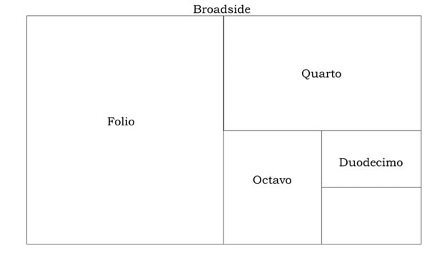
Самыми ранними из сохранившихся книг, напечатанных Гутенбергом подвижным шрифтом, являются кварто (примерно 1452–53 гг.), которые были напечатаны до Библии Гутенберга. Самый ранний из известных – это фрагмент средневековой поэмы «Сибилленбух» (Sibyllenbuch).
1.2 Quarto позволяет
Представлять анализ данных в доступном и наглядном виде.
Иметь возможность вывода в различных форматах: HTML, pdf, ePub, Word, PowerPoint и т.д. для единого источника публикации.
Использовать разметку, включающую формулы, цитаты, перекрестные ссылки, расширенные макеты и многое другое.
Иметь возможность публикации веб-документов в сети Интернет через различные сервисы.
Включать интерактивные приложения и виджеты в HTML-документы.
Создавать документы с включением кода для воспроизводимых вычислений.
1.3 С помощью Quarto можно создавать
Статьи как для веб-публикации, так и подготовленные для научных издательств.
Презентации.
Веб-страницы, включая блоги и техническую документацию.
Интерактивные книги, которые можно переводить различные форматы, пригодные для печати и электронных носителей.
1.4 Примеры разработок на Quarto
Большим источником идей для создания рабочих материалов, сайтов, презентаций, статей, документации и другого похожего содержимого может служить Галерея примеров Quarto.
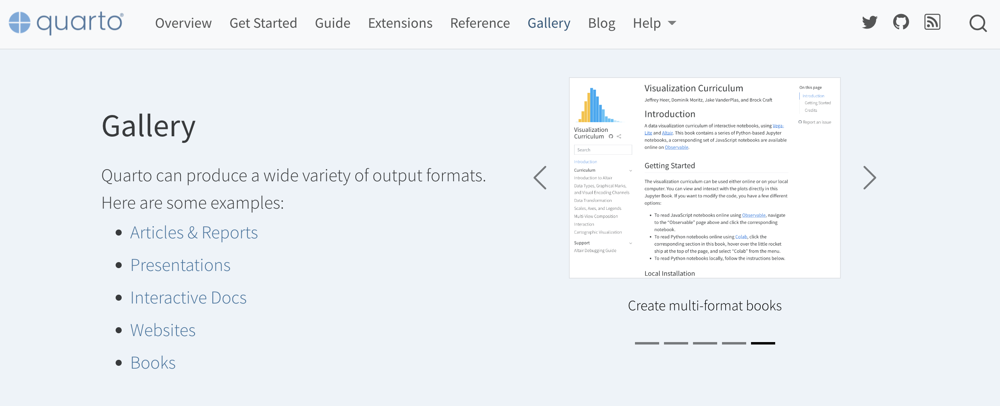
Два примера мини-блогов на Quarto показаны ниже.
- Первый пример – это набор ссылок на полезные ресурсы по языку программирования R, опубликованный как GitHub Pages.
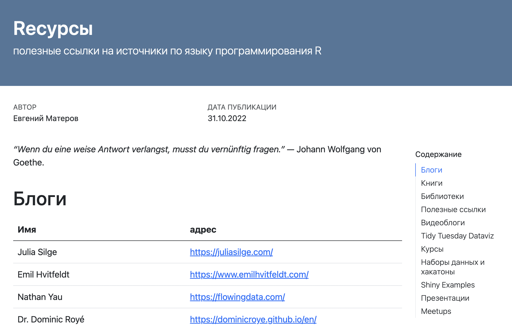
- Мини-блог по визуализации данных Графики на досуге также сделан на Quarto и опубликован через Netlify.
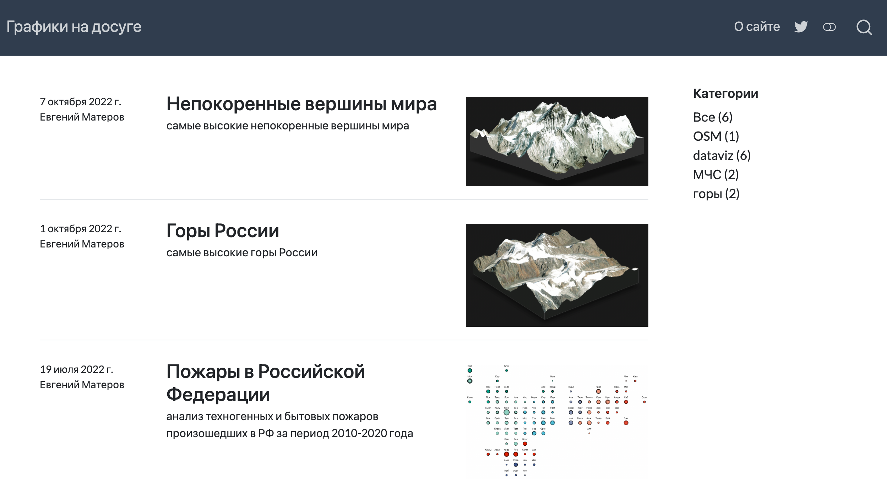
2 Как начать работу с Quarto?
2.1 Установка Quarto
Для установки Quarto, необходимо зайти на начальную страницу проекта https://quarto.org/ и перейти по адресу Get Started.

Установка происходит в два этапа.
Шаг 1. Установка интерфейса командной строки (CLI) для актуальной операционной системы (Windows, Linux или Mac OS). Рекомендуется устанавливать стабильную версию Current Release со страницы загрузки, а не Release Candidate.
Шаг 2. Установка плагина для рабочей интегрированной среды разработки (IDE). Это может быть, например, VS Code, RStudio, Jupyter или иной текстовый редактор. Можно также установить Quarto-плагин, например, для Sublime Text или Emacs.
2.2 IDE-инструменты
2.2.1 RStudio
Если Quarto CLI уже установлен, то RStudio обнаружит это и автоматически включит функции Quarto. В качестве альтернативы существует версия Quarto встроенная в RStudio, которую можно активировать в настройках R Markdown.
Создание нового Quarto-документа в RStudio с расширением .qmd происходит как File -> New File -> Quarto document…, что открывает новый документ на основе шаблона.
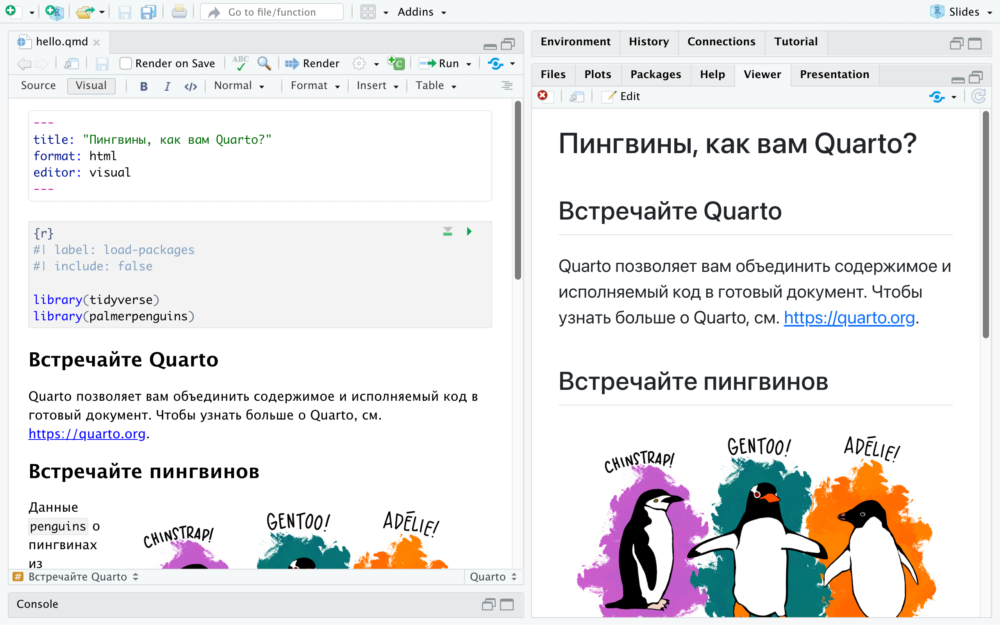
Отметим, что переключение кнопки Source на Visual позволяет перейти в режим визуального редактирования, который близок к WYSIWYG-редактору и может быть особенно полезен для создания таблиц в документах. Подробно о работе в RStudio можно посмотреть на соотетствующей странице документации. Для остановки фонового задания необходимо перейти на панель Background Jobs и нажать значок Stop.
2.2.2 Visual Studio Code
Альтернативно, VS Code предлагает возможность редактировать документы как с .qmd, так и с .ipynb-ноутбуками. Помимо предварительного просмотра документов, также работает подсветка синтаксиса для встроенных языков, автоматические подсказки, автозавершение для языков программирования, клавиатурные сочетания, сниппеты, предварительный просмотр в реальном времени для LaTeX, а также диаграмм Mermaid и Graphviz.

Преимущество VS Code состоит в большом количестве полезных плагинов, которые позволяют, например, работать с Git-системой управления версиями. Удобный проводник, мини-карта и диагностика для опций YAML делает VS Code отличным инструментом для создания больших проектов, например, книг. Работа VS Code в Quarto описана на странице документации.
2.2.3 Jupyter
Для тех, кто программирует на Julia или Python более привычным инструментом является система Jupyter-ноутбуков. Для того, чтобы создать Quarto-пример в Jupyter, необходимо в преамбулу документа добавить YAML-вставку и затем отрендерить .ipynb-ноутбук так, как это будет показано ниже. Если вместо Python используется Julia, то в преамбуле необходимо в качестве ядра указать jupyter: julia-1.10.
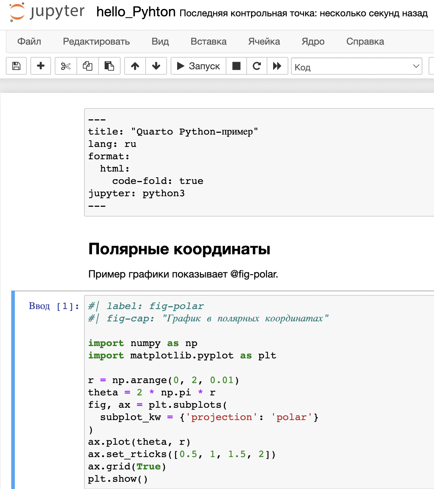
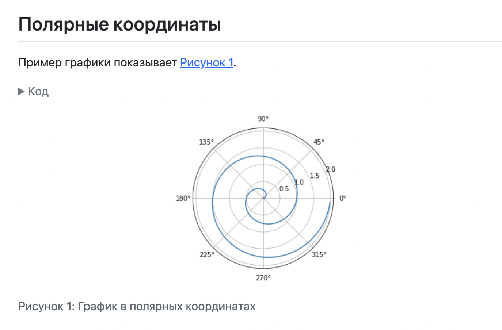
2.3 Работа с проектами
2.3.1 Создание нового проекта
Есть несколько вариантов для создания проекта.
- Создание проекта из командной строки.
# веб-сайт
quarto create-project mysite --type website# блог
quarto create-project myblog --type website:blog# книга
quarto create-project mybook --type book- В VS Code или в RStudio
Например, в RStudio: File -> New Project… -> New Directory.
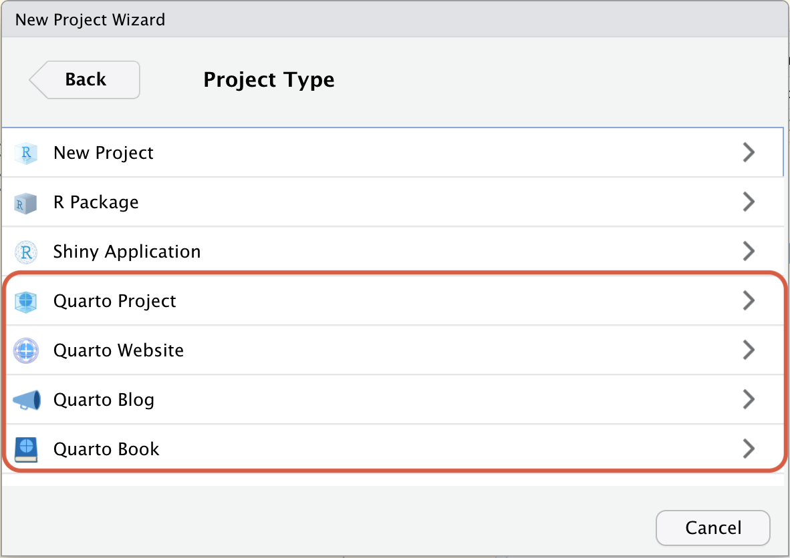
2.3.2 Как Quarto организует рендеринг документов
Сначала Knitr (в R) или Jupyter (в Pyhton или Julia) выполняет все фрагменты кода .qmd-файла и создает новый markdown (.md) документ, который включает в себя код и его выходные данные.
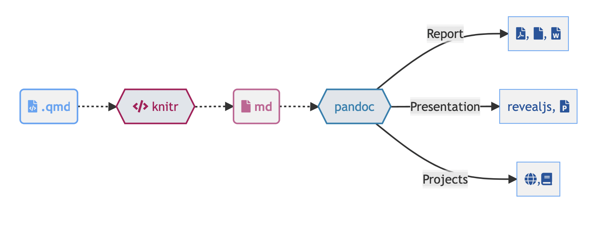
Созданный markdown-файл затем обрабатывается Pandoc для преобразования в различные форматы файлов, включая HTML, PDF, Word и другие форматы.
2.3.3 Возможности для рендеринга
- Можно использовать кнопку Render в RStudio IDE или Visual Studio Code для рендеринга файла и предварительного просмотра выходных данных.
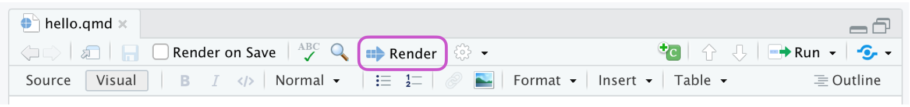
- Quarto в командной строке.
Terminal
quarto render <input> --to <format>Например:
Terminal
quarto render document.qmd --to docx- Quarto как R-библиотека.
quarto::quarto_render(input = ___, output_format = ___)Например:
quarto_render("document.qmd", output_format = "pdf")2.4 Структура документов в Quarto
2.4.1 Общая структура документов в Quarto
Условно, документ в Quarto состоит из трех базовых частей.
Метаданные.
Текст и Markdown.
Исполняемый код.
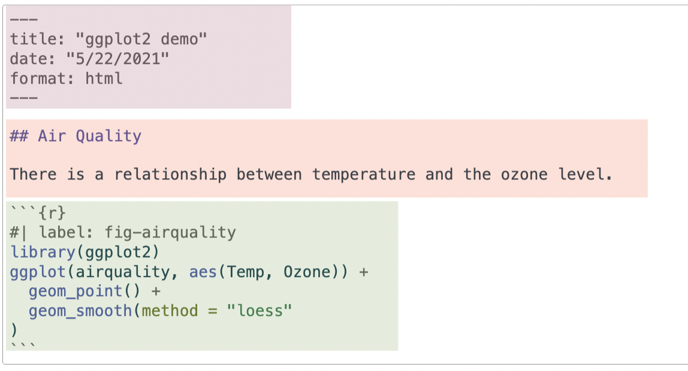
2.4.2 Основы синтаксиса
Quarto основан на Pandoc и использует разновидность markdown в качестве базового синтаксиса документа. Pandoc markdown – это расширенная и слегка переработанная версия синтаксиса markdown. Синтаксис включает в себя форматирование текста, заголовки, ссылки и рисунки, списки и таблицы.
Исполняемый код записывается в специальные блоки (ячейки), в начале которых указывается язык программирования (Pandoc поддерживает более 140 языков) для выделения.
```{python}
print("Goodbye, World!")
```Если мы хотим сделать код неисполняемым – нужно поставить точку перед указанием языка программирования.
```{.julia}
using Plots
plot(sin, x->sin(2x), 0, 2π, leg=false, fill=(0,:lavender))
```Внутри ячейки в комментариях в верхней части блока можно указывать параметры. Параметры ячейки влияют на выполнение и вывод блоков исполняемого кода. Например:
# метка для указания ссылки на рисунок
#| label: fig-polar
# выключение визуализированного вывода кода
#| echo: false
# подпись к рисунку
#| fig-cap: "График функции"
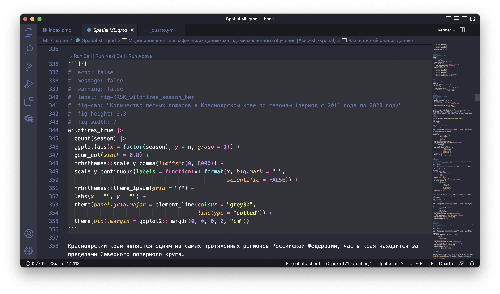
При необходимости можно выделить элементы кода либо скрыть код, сделав развертывающийся блок.
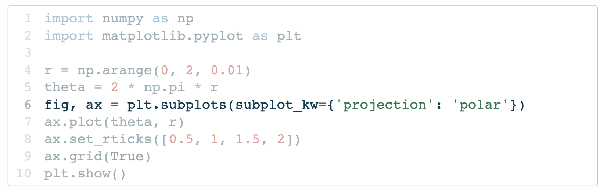
2.4.3 Расширенные макеты
Одним из лучших нововведений Quarto стали новые возможности для макетирования, например Quarto позволяет делать на полях сноски, библиографию, названия для рисунков, рисунки и даже таблицы. Кроме того, обновлены возможности компоновки блоков (например, рисунков или таблиц) как подэлементов (например, как подрисунков), работающих с перекрестными ссылками, а также работа с табами.
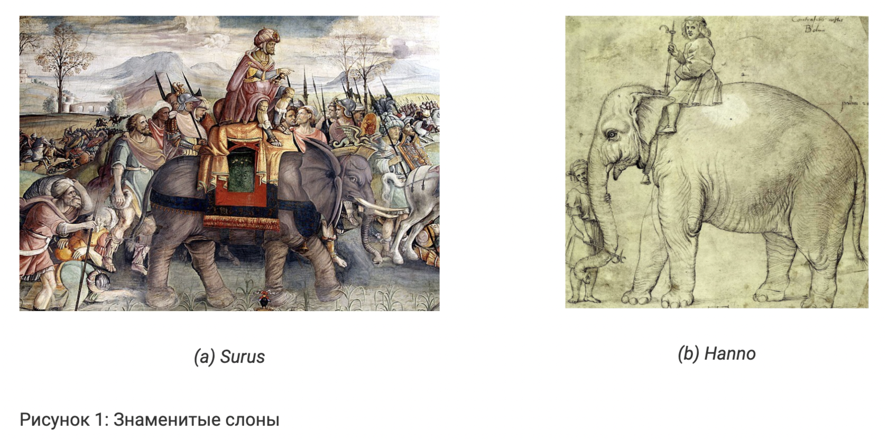
В случае, если содержимое выходит за пределы области основного текста, его можно продолжить, используя правую и левую версии столбцов основного текста, страницы и экрана для компоновки содержимого. Например, как ниже:
```{r}
#| column: screen-inset-right
1 + 1
```
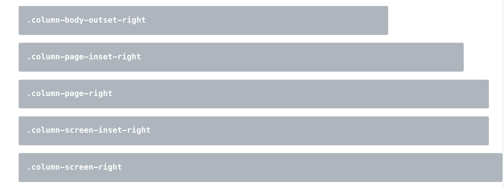
2.4.4 Выносные блоки
Интересной новинкой Quarto являются выносные блоки, которые служат способом привлечения дополнительного внимания к определенным концепциям или указанием, что определенное содержимое является дополнительным или применимо только к некоторым сценариям. Выносные блоки работают в HTML, PDF, MS Word, ePub и Revealjs.
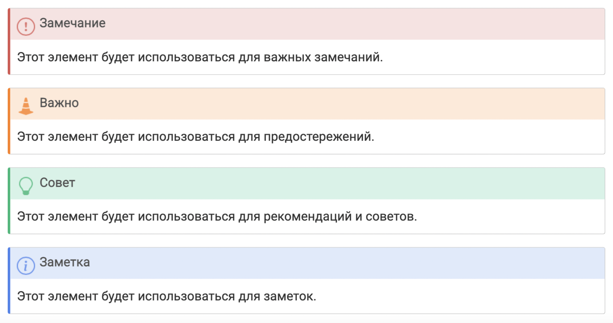
Ниже показан пример кода для оформления блока.
:::{.callout-tip}
## Совет
Этот элемент будет использоваться для рекомендаций и советов.
:::2.4.5 Диаграммы
Вставка диаграмм – еще одно ноу-хау в Quarto, имеющее встроенную поддержку Mermaid и Graphviz диаграмм. Это позволяет создавать блок-схемы, диаграммы последовательностей, диаграммы состояний, диаграммы Ганта и многое другое, используя синтаксис обычного текста, мотивированный markdown.
```{mermaid}
flowchart LR
A[Прямоугольник] --> B(Скругленные края)
B --> C{Решение}
C --> D[Первый результат]
C --> E[Второй результат]
```
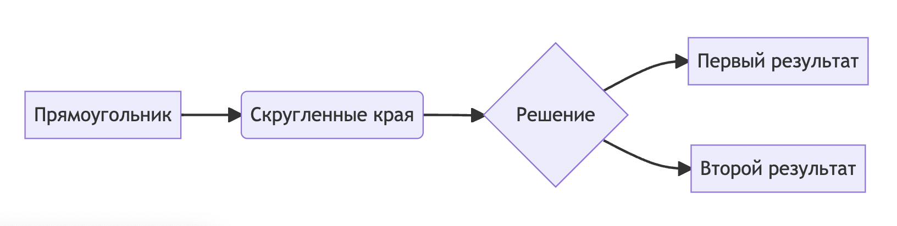
2.4.6 Метаданные YAML
Метаданные могут быть включены в Quarto-документ с помощью YAML либо в преамбуле в начале файла, либо отдельным _quarto.yml-файлом. С помощью YAML мы задаем, например, название документу, дату, автора, устанавливаем те параметры, которые необходимы при рендеринге документа, чтобы не писать их в командной строке и т.д.
Очень обзорно, как используется структура YAML в Quarto:
установите параметр как
key: value(ключ: значение);строки с
:должны быть в кавычках;включайте несколько значений в список с помощью
-;вкладывайте пары ключ-значение с помощью отступа;
многострочные строки следуют за
|.
Приведем простой пример YAML-части документа.
---
title: "Документ в Quarto"
author:
- И.О. Исполнитель
- А.М. Заместитель
format:
html:
toc: true
abstract: |
Это аннотация.
Это второй параграф.
---Также, приведем пример _quarto.yml-файла, соответствующего книге.
Пример YAML для книги (развернуть)
# тип проекта - книга
project:
type: book
# язык документа
lang: ru
# вид подсветки кода
highlight-style: github
book:
# название (заголовок) книги
title: "Анализ и моделирование данных"
# подзаголовок
subtitle: "с использованием языка программирования R"
# аннотация
abstract: "В книге рассмотрены современные подходы к практическим задачам."
# URL проекта
site-url: "https://book.netlify.app/"
# URL репозитория
repo-url: "https://github.com/book"
# иесто издания
publisher-place: "Москва, Красноярский край"
# URL
url: "https://book.netlify.app/"
# имя автора
author:
- name:
given: Евгений
family: Матеров
literal: Е.Н. Матеров
# ORCID-индекс идентификации научных авторов (https://orcid.org/)
orcid: 0000-0001-1111-0111
# e-mail авторов
email: moskva@gmail.com
# организация
affiliation:
- name: МГУ имени М.В. Ломоносова
# дата на титульном листе проекта
date: today
# фавикон
favicon: "favicon.png"
# картинка обложки
cover-image: generate.png
# код сервиса Google Analytics
google-analytics: "G-XXXXXXXXXX"
# панель навигации
navbar:
# цвет фона панели навигации
background: "#2860a1"
collapse-below: lg
# боковая панель
sidebar:
collapse-level: 0
style: "floating"
background: white
foreground: dark
logo: sidebar_logo.jpg
# нижний колонтитул страницы
page-footer:
border: true
background: light
left:
|
МГУ имени М.В. Ломоносова
# главы
chapters:
- index.qmd
# раздел
- part: "Введение"
chapters:
- Intro Chapter/intro.qmd
- part: "Работа с табличными данными"
chapters:
- Table data Chapter/tidy data.qmd
- Table data Chapter/base table.qmd
- Table data Chapter/deep table.qmd
- part: "Визуализация данных"
chapters:
- Visualization Chapter/visualization.qmd
- Visualization Chapter/color.qmd
- Conclusion Chapter/Conclusion.qmd
- references.qmd
# приложения
appendices:
- Appendicies/R install.qmd
- Appendicies/Samples.qmd
# расположение сносок
# https://quarto.org/docs/reference/formats/pdf.html#footnotes
reference-location: margin
# файл библиографии
bibliography: references.bib
format:
html:
# тема
theme: pulse
# свертка кода в HTML
code-fold: false
# содержание
toc: true
# опции для исполняемого кода
execute:
execute_notebooks: force
allow_errors: true
# разрешить кэширование
cache: true
# ключи перекрестных ссылок метаданных
crossref:
# название приложений
appendix-title: "Приложение"
appendix-delim: ":"
crossref-apx-prefix: "Приложение"
# цитирование, см. также
# https://quarto.org/docs/authoring/create-citeable-articles.html
citation:
url: https://book-training.netlify.app/
# переопределение перевода
language:
title-block-affiliation-single: "Организация"2.4.7 Формулы в Quarto
Математические формулы в Quarto используют разделители $ для встроенных математических элементов текста и разделители $$ для выносной математики на основе LaTeX-синтаксиса. Для математической обработки HTML с использованием MathJax (по умолчанию) можно использовать команды \def, \newcommand, \renewcommand, \newenvironment, \renewenvironment и \let для создания собственных макросов и сред. Также доступны, например, форматы KaTeX, GladTeX, MathML или просто plain-формат. В визуальном редакторе происходит автоматический предосмотр формул.
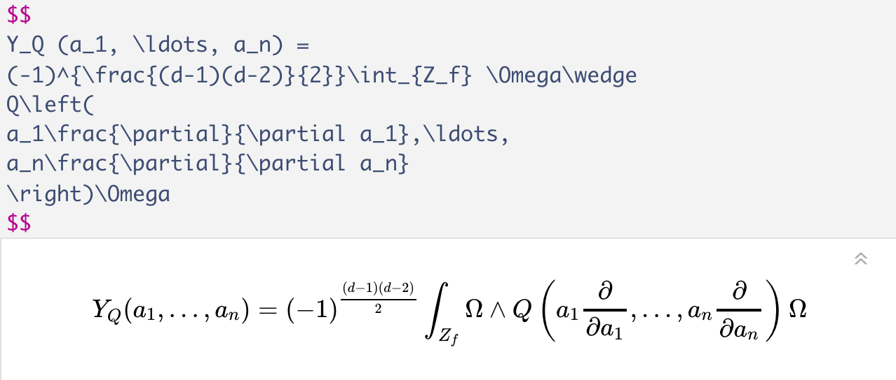
Форматы журнальных статей часто требуют детального контроля создаваемых выходных данных, а также возможности использования специфичных для журнала команд и директив. Это может быть достигнуто для форматов Quarto путем предоставления пользовательских шаблонов Pandoc (например, LaTeX). Часто эти шаблоны представляют собой смесь специфичного для журнала стиля LaTeX и стандартных директив, требуемых Pandoc.
Предоставляя свой собственный пользовательский шаблон, используемый при рендеринге, мы получаем полный контроль над конечным результатом. Пользовательский шаблон задается подобным образом через YAML:
---
format:
pdf:
template: mytemplate.tex
--- В пользу Quarto можно отметить то, что с уходом MS Equation и дороговизной MathType, создание несложных документов с математическими формулами в MS Word, не использующими полного погружения в LaTeX, можно осуществить как связку .qmd -> .docx.
2.5 Локализация
В Quarto достаточно указать в YAML-части документа нужный язык, и документ будет локализован должным образом, например, “Figure” будет заменено на “Рисунок” и т.д. Локализацию можно отнести к преимуществам Quarto, например, в blogdown уже нет такого простого подхода для перевода названия рисунков.
---
title: "Документ"
lang: ru
---Тем не менее, бывают случаи когда нужно переопределить перевод того или иного термина. Это делается следующим образом. Скажем, пусть мы хотим, чтобы affiliation в YAML-фрагменте кода ниже соответствовало “ОРГАНИЗАЦИЯ” в образе документа, а не “ПРИНАДЛЕЖНОСТЬ”, как это сделано по умолчанию.
---
book:
author:
affiliation:
- name: МГУ имени М.В.Ломоносова
--- На странице локализации указаны .yml-файлы с языками, например _language-ru.yml содержит перевод понятий на русский язык, в частности, строка title-block-affiliation-single: "принадлежность" содержит нужный перевод. Переопределить перевод можно добавив в конце YAML-файла строки:
---
language:
title-block-affiliation-single: "организация"
--- Один из способов получения .pdf-документа на локализованном (не английском) языке, это цепочка .qmd -> .docx -> .pdf. При этом, для создания MS Word-документов можно использовать шаблоны. Другой способ локализации .pdf-вывода автору подсказал Сергей Валерьевич Бабёнышев. Для этого необходимо скачать файл с TeX-заготовкой и поместить в папку с проектом. Пример .qmd документа показан ниже.
Пример документа с элементами LaTeX-формул для рендеринга в PDF (развернуть)
---
lang: ru
title: "Задания"
format:
pdf:
toc: true
number-sections: true
color-links: true
keep-tex: false
template: template.tex
execute:
echo: false
# jupyter: python3
mainfont: "Times New Roman"
---
# Найти матрицу обратную к заданной
$$
\text{
a) $\begin{pmatrix}
3 & -1 & 3 \\
-2 & -2 & 3 \\
4 & 0 & 1 \\
\end{pmatrix}$;
\ \ \ \ \
б) $\begin{pmatrix}
-1 & -1 & 2 \\
2 & -2 & 2 \\
4 & 4 & 3 \\
\end{pmatrix}$.
$$
# Кривые второго порядка
а) Написать каноническое уравнение эллипса, если его большая полуось равна 5, а фокусы расположены в точках $(\pm4, 0)$.
# Найти наклонные асимптоты графика функции
$$
\text{
а) $\displaystyle y=\frac{\sqrt{x}}{3+2\sqrt{x}}$.\ \ \ \ \
б) $\displaystyle y=\frac{2\sqrt{x}}{1+2x}$.}
$$
# Вычислить двойной интеграл
a) $\displaystyle\iint\limits_{G}{{{({{x}^{2}}+{{y}^{2}})}^{6}}dx}dy$,
где $G$ – сектор круга радиуса 1 с центром в начале координат, лежащий во II квадранте.
Откройте терминал, перейдите в папку проекта и наберите команду
Terminal
quarto render your_file_name.qmd --to pdfЕще один способ локализации описан в статье Как рендерить R Markdown в PDF на кириллице:
---
title: "Cyrillic markdown"
format: pdf
pdf-engine: lualatex
mainfont: Segoe UI
sansfont: Segoe UI
monofont: Cascadia Mono PL Light
editor: visual
---```
#| r include = F
library(showtext)
showtext_auto()
```3 Публикация веб-документов
Quarto поддерживает множество различных веб-сервисов для публикации:
Quarto Pub – новый сервис от создателей Quarto.
- Перед публикацией вы должны сделать рендер всего вашего Quarto-проекта следующей командой.
Terminal
quarto renderВ результате рендеринга должна должна быть сформирована папка _site (либо, например, _book, в зависимости от назначения проекта), которая понадобится в дальнейшем.
- Создайте, например, GitHub-репозиторий, куда поместите проект.
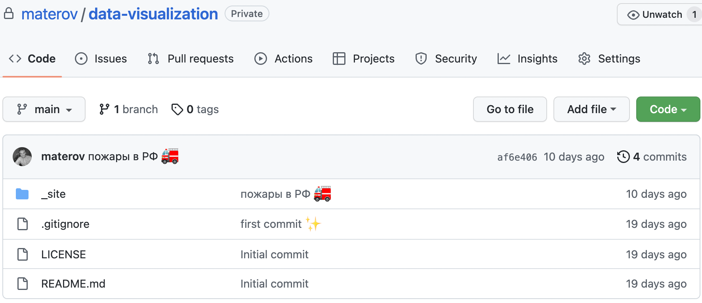
Наиболее простыми и быстрыми способами публикации веб-документов можно считать сервисы Netlify и GitHub Pages. Рассмотрим обзор публикации документов на основе этих платформ. Создание и публикация персональных веб-сайтов на базе Quarto также хорошо рассмотрена на страницах авторов Samantha Csik, Albert Rapp, Beatriz Milz.
3.1 Этапы публикации в Netlify
Удобство работы с Netlify состоит в автоматизации рабочего процесса путем интеграции с Git-сервисами. На главной странице Netlify необходимо сделать Log in, затем выбрать Add new site, где нужно выбрать Import an existing project.
Затем необходимо указать репозиторий GitHub который был создан ранее.
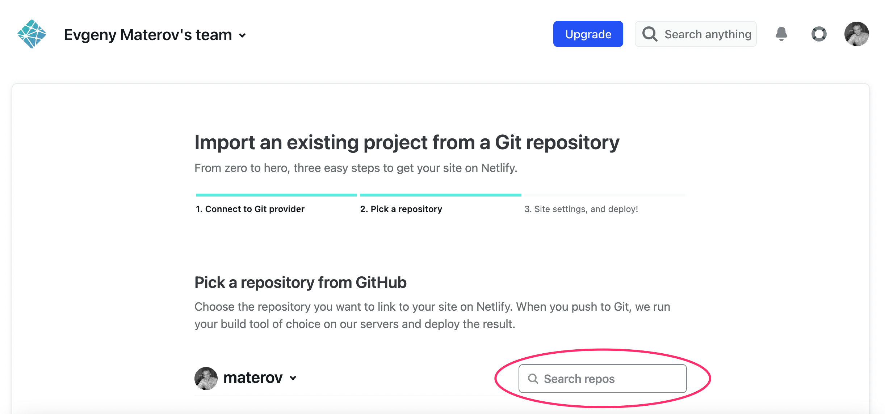
После того, как был выбран репозиторий, нужно указать рабочую папку проекта (в нашем случае это _site).
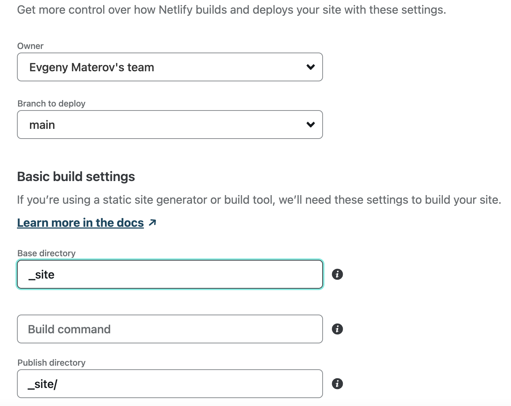
Окончательно, нужно нажать на кнопку Deploy site и в настройках переименовать название сайта.
Теперь каждый раз, когда делается push командой Git (например, в терминале или в RStudio), через некоторый короткий промежуток времени обновляется и веб-страница.
Если необходимо быстро опубликовать материал (например, презентацию), который не будет обновляться с течением времени или нет необходимости работать с Git, то достаточно воспользоваться сервисом Netlify Drop: перетащите папку _site в соответствующую область экрана, при этом переименуйте основной .html-файл в index.html.
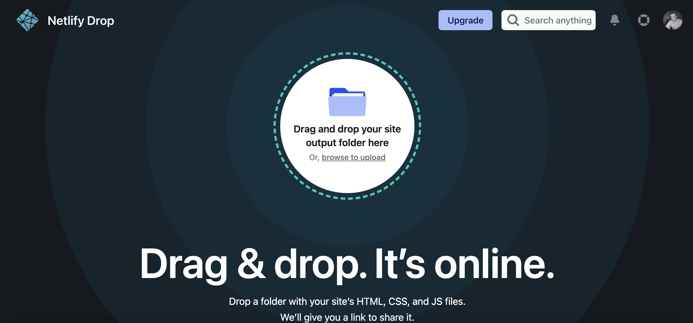
3.2 Этапы публикации в GitHub Pages
Подробно публикация на GitHub Pages описана на странице GitHub Docs. Для публикации Quarto-репозитория как страницы на GitHub достаточно зайти в раздел Settings и выбрать слева Pages для настройки.
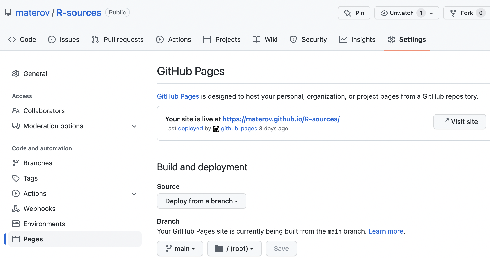
3.3 Этапы публикации в Quarto Pub
Quarto Pub – это новый сервис для публикации статических HTML-документов, который был внедрен одновременно с Quarto. Процесс публикации в Quarto Pub описан на странице документации. Сделаем краткий обзор Quarto Pub.
После того, как был создан проект, необходимо открыть терминал с директорией проекта и набрать в терминале команду как написано ниже.
Terminal
quarto publish quarto-pubТеперь в терминале необходимо ответить на вопросы, которые будут заданы в процессе публикации и сайт будет опубликован на https://your-account.quarto.pub/site-name/.
Совет: в качестве site-name Quarto Pub будет предлагать сокращенное название блога или иного документа, которое может быть на русском языке, не используйте кириллицу для сокращенного названия сайта, замените на иное название.
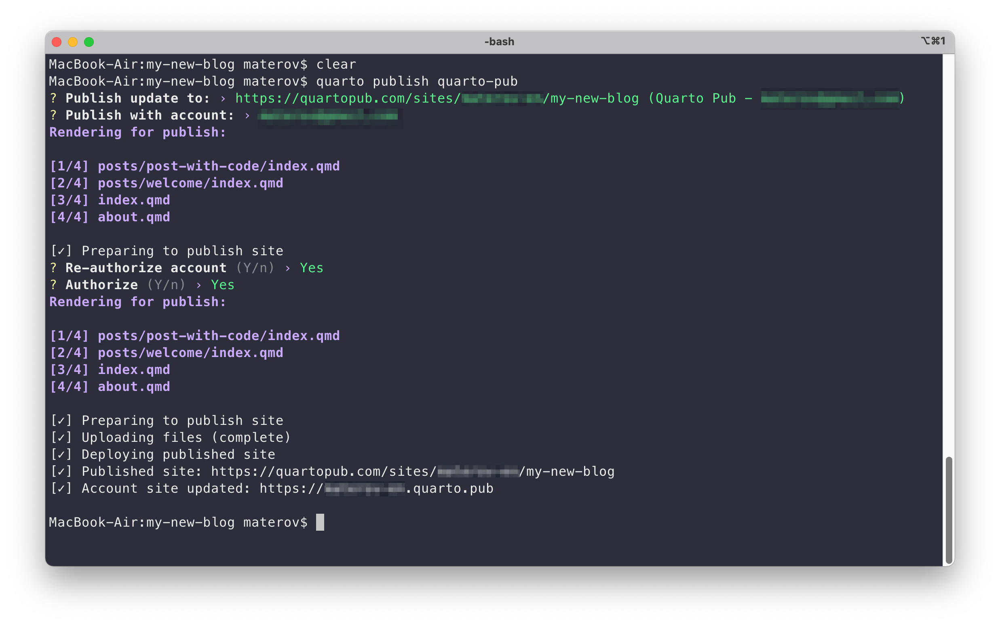
Опубликованными сайтами можно управлять на https://quartopub.com. Нажмите на мини-образ сайта, чтобы перейти на страницу администратора, которая позволяет вам изменить краткое название сайта, сделать сайт по умолчанию для вашей учетной записи или полностью удалить сайт.
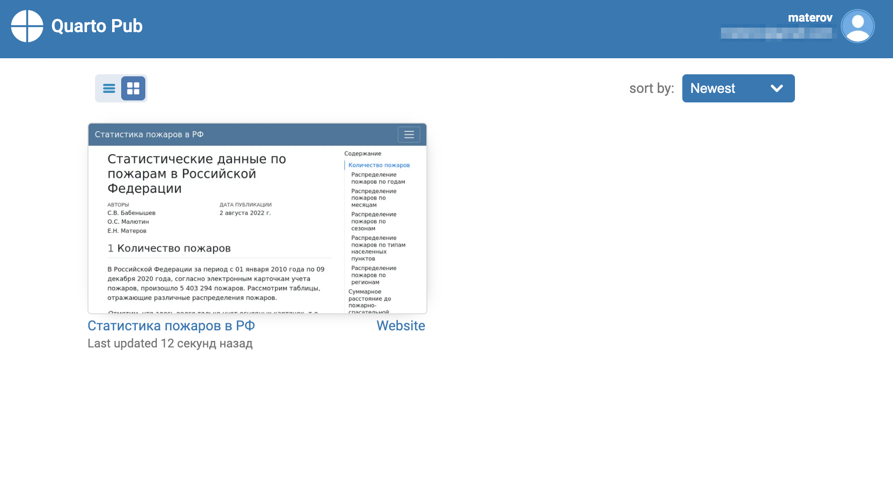
Сервис Quarto Pub публикует материалы очень быстро, поддерживает GitHub Actions, однако у него меньше функциональных возможностей чем у Netlify или GitHub Pages.
4 Сравнение инструментов R Markdown с Quarto
Quarto привнесло множество достоинств R Markdown для программистов на Python или Julia. Для пользователей R возникает естественный вопрос: “стоит ли полностью отказаться от R Markdown в пользу Quarto?”
R Markdown предлагает огромный спектр библиотек: bookdown для написания книг и отчетов, distill и blogdown для создания блогов, papaja и rticles для публикации научных статей, workflowr для эффективного управления проектами, воспроизводимости и обмену результатами исследования, xaringan для создания презентаций и т.д. В планах авторов Quarto сделать аналоги для pagedown для создания документов разбитых на страницы и flexdashboard, который отлично подходит для интерактивных дэшбордов и прототипирования сайтов.1
Наиболее полное сравнение инструментов в виде таблицы представлено на странице аналогов. Отметим, что все документы в R Markdown можно компилировать в Quarto практически без изменений.
Нужно ли переходить с R Markdown на Quarto? Возможно, только ради новых функций (которые в основном будут делаться для Quarto), расширенных макетов, Bootstrap-тем, возможности использовать редактор VS Code и т.д. Профессиональные пользователи отмечают некоторую разницу в подходах, где-то не в пользу Quarto, например, при передаче параметров переменных, рендеринге большого объема документов и т.д., однако для непрофессионалов Quarto остается идеальным простым вариантом для введения в создание отчетов, интерактивных книг и блогов. Тем не менее, например, blogdown может обладать гораздо большим функционалом чем Quarto, это библиотека, в которой можно провести ряд тестовых проверок перед созданием нового поста в блоге, xaringan служит прекрасным и достаточно легким (обладающим небольшим размером выходного файла по отношению к reveal.js в Quarto) средством создания HTML-презентаций, поэтому пользуйтесь тем инструментом, который лучше подходит для тех или иных задач. О разнице между подходами R Markdown и Quarto можно также почитать в статьях With Quarto Coming, is R Markdown Going Away? No. автора @Yihui Xie и We don’t talk about Quarto / Until now!, которую написала @Alison Hill.
5 Расширения
Расширения – это мощный способ изменить и расширить поведение Quarto. В настоящий момент для реализации расширений нужно обновить Quarto до версии > 1.2x. Перечислим некоторые виды расширений.
5.1 Виды расширений
Shortcodes – это специальные директивы markdown, которые генерируют различные типы контента.
Filters – это гибкий инструмент для внедрения новых глобальных моделей поведения и/или новых моделей рендеринга markdown.
Custom Formats позволяют создавать новые форматы вывода, объединяя параметры документа, шаблоны, таблицы стилей и другое содержимое.
Каждый тип расширения имеет свои собственные требования к разработке: в некоторых случаях расширение может быть создано только с использованием метаданных YAML, однако во многих случаях необходимо выполнять некоторые пользовательские сценарии с использованием Lua.
По категориям, расширения можно отнести к следующим типам.
Что умеют расширения? Например, создавать новые форматы вывода, объединяя параметры документа, шаблоны, таблицы стилей и другое содержимое; создавать элементы кода для вставки твитов или видео в документ или значков Fontawesome, служить шаблонами-заготовками для научных статей и т.д.
5.2 Расширение Shinylive для Quarto
Большой интерес вызывает развитие нового проекта Shiny for Python, который позволяет добавлять интерактивность в документы с помощью Python-кода. Расширение Shinylive позволяет встраивать приложения Shiny для Python в документы Quarto, которые полностью запускаются в браузере с использованием Pyodide (Python, скомпилированный в WebAssembly). В настоящий момент Shinylive (как и Shiny for Python) является экспериментальным проектом, для работы Shinylive требуется:
- Quarto Release Candidate версии 1.2.x;
- Python версии 3.8 или выше;
- текущая версия Python-библиотеки
shinylive, которая может быть установлена как:
Terminal
pip install shinylive --upgrade
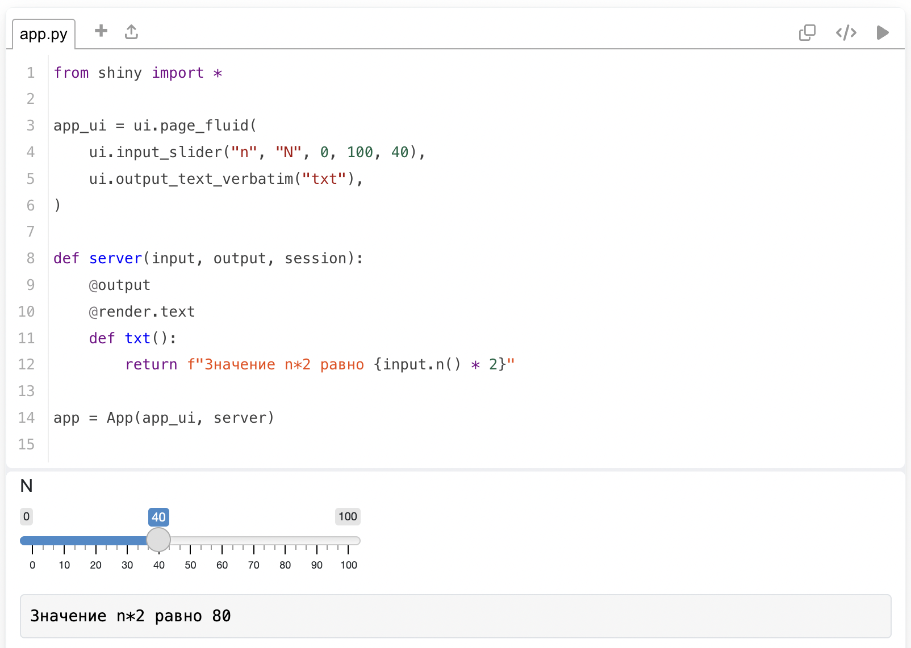
За дальнейшим развитием проекта можно следить на странице Shinylive, автором которой является @Winston Chang, см. также статью. Также, вызывает интерес расширение Quarto для WebR.
6 Возможности для автоматизации
6.1 Docker и Dev Container Features
Peter Solymos написал две статьи касающиеся работы Docker с Quarto:
James Goldie опубликовал статью Dev containers with R and Quarto.
Dev Container Features – это автономные блоки установочного кода, конфигурации контейнера и/или настроек и расширений, предназначенные для включения новых возможностей разработки в вашем dev-контейнере. Они могут быть созданы для работы с широким спектром изображений базовых контейнеров и предоставляют быстрый способ связать метаданные контейнеров с некоторыми шагами установки. Вы можете добавить их в свои контейнеры с помощью простой ссылки. Например, Dev Container Features (for R) теперь включают в себя установку Quarto CLI.
6.2 GitHub Actions и Continuous Integration (CI)
Работа с системой контроля версий (CI) описана на странице документации Quarto и относится к практике автоматической публикации содержимого из кода, при этом уделяется особое внимание к проверке отображаемых выходных данных в системе управления версиями, где происходит выполнение кода и рендеринг – локально или на сервере, в зависимости от различных сценариев и записи зависимостей в R, Python или Julia.
Статья Quarto Website with GitHub Actions рассматривает использование действий GitHub для рендеринга и публикации веб-сайта Quarto.
@Beatriz Milz написала статью Monitoring quarto-dev repositories: Creating a workflow with GitHub Actions for R users о том, как можно создать рабочий процесс для мониторинга репозиториев на GitHub.
Github Actions for Quarto – В этом репозитории хранятся действия GitHub, полезные для создания и публикации документов Quarto.
7 Дополнительные ресурсы по Quarto
Основным источником для официальных новинок, выходящих для Quarto можно считать блог Quarto, а для расширений Quarto – публикации, которые делает Mickaël Canouil.
7.1 Подробное руководство по использованию Quarto
Для Quarto существует хорошее введение на странице документации и достаточно подробное руководство, описывающее практически все аспекты работы с Quarto.
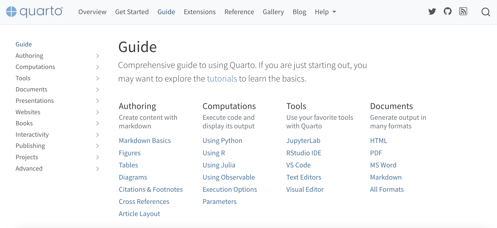
7.2 Советы дня по Quarto
К началу конференции rstudio::conf(2022) @Mine Çetinkaya-Rundel запустила проект Советы дня по Quarto, включающий короткие заметки с советами по использованию Quarto. Здесь можно найти множество полезных идей начиная от аннотирования слайдов до включения темной темы.
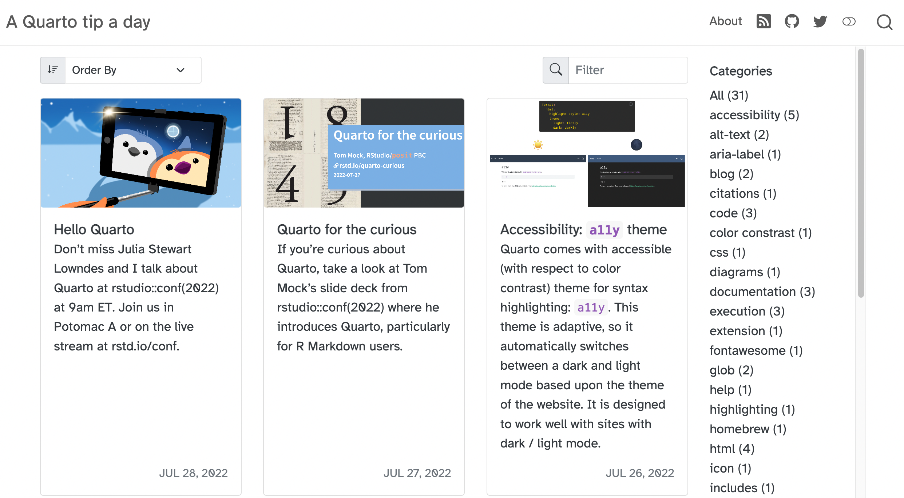
7.3 Практический семинар “От R Markdown до Quarto”
Также, в качестве сателлита к rstudio::conf(2022), проходил практический семинар From R Markdown to Quarto, материалы которого доступны на GitHub странице. В частности, на странице Materials можно найти несколько подробных презентаций по введению в Quarto.
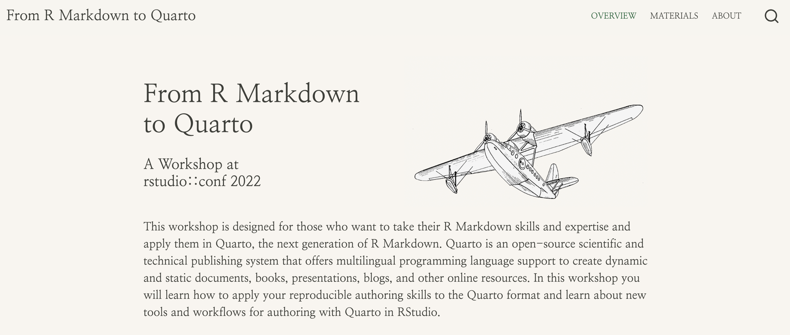
7.4 Практический семинар “Приступая к работе с Quarto”
@Tom Mock провел более чем двухчасовую YouTube-презентацию Welcome to Quarto Workshop!, слайды которой Getting Started with Quarto также имеются в открытом доступе.
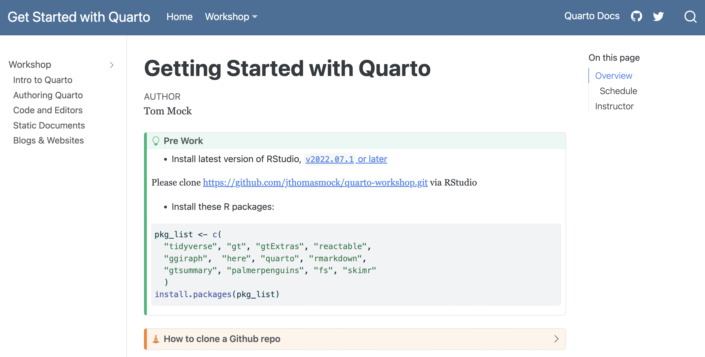
7.5 Создание блога в Quarto
@Isabella Velásquez провела YouTube-презентацию Building a Blog with Quarto, материалы которой можно найти на странице как RStudio Enterprise Community Meetup. Основу составила хорошо оформленная документация по созданию блога.
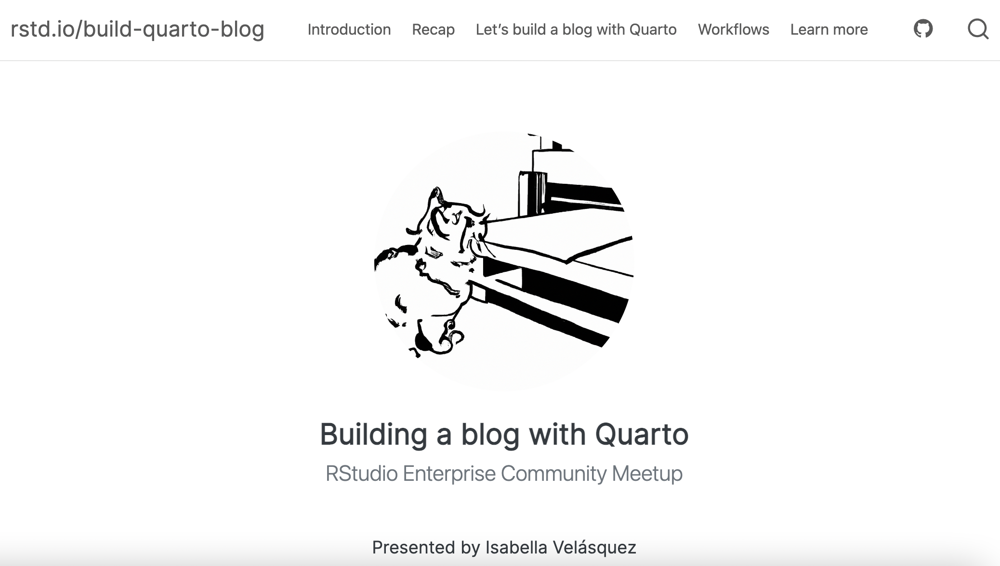
Кроме того, можно порекомендовать статью Creating your personal website using Quarto автора @Samantha Csik по созданию собственных веб-страниц и блогов в Quarto.
Отметим, что при создании новых записей в блогах может возникнуть вопрос о совместимости библиотек из старых сообщений с обновленными. Кроме того, нет смысла в рендеринге старых сообщений, которые уже опубликованы. Решение этих проблем в Quarto заключается в замораживании вывода вычислительных сообщений в блоге. Подробно про опцию freeze можно почитать на странице документации.
7.6 Страница Awesome Quarto
@Mickaël Canouil ведет страницу Awesome Quarto на GitHub, где собраны список документов, инструментов, примеров и статей по Quarto.
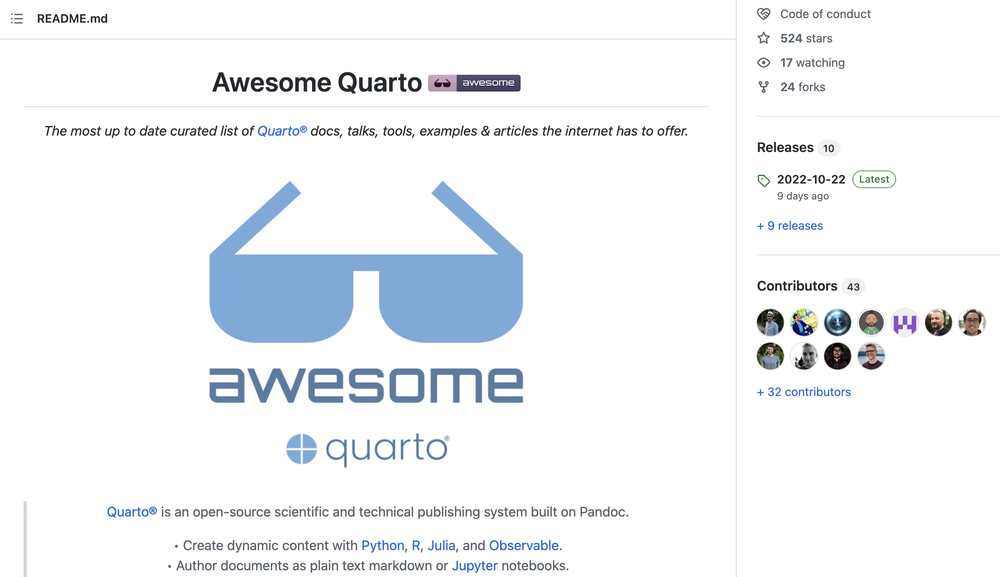
На данном сайте можно найти много шаблонов документов и расширений Quarto.
7.7 Дополнительные материалы
Сейчас существует очень большое количество различных интересного содержательного материала, касающегося Quarto. Ниже указан лишь небольшой список, где каждый найдет что-то интересное для себя.
Видео-материалы:
Reproducible Publications with Julia and Quarto | J.J. Allaire | JuliaCon 2022
Mine Çetinkaya-Rundel & Julia Stewart Lowndes | Hello Quarto: Share, Collaborate, Teach, Reimagine
Hamel Husain | Literate Programming With Jupyter Notebooks and Quarto | RStudio (2022)
How to style your Quarto blog without knowing a lot of HTML/CSS
Openscapes Community Call 06: Hello Quarto! Co-hosted with RLadies Santa Barbara
Презентации:
Веб-материалы:
8 Некоторые преимущества и недостатки Quarto
Отметим некоторые интересные возможности Quarto.
Простота локализации: необходима одна строка в YAML-части документа для русификации HTML-документов. Недоработки перевода можно легко исправить самостоятельно.
Простота перехода от одного формата вывода документа к другому: имея единый источник, можно быстро указать тип документа (.docx, .pdf или даже собственный формат). Тем не менее, если явно указать шрифты в .html-документе, а затем сменить формат на .docx, не стоит ожидать что семейство шрифтов также будет изменено.
---
title: "Мой документ"
format:
html:
mainfont: cursive
---- Работа с большими проектами (например, книгами), кэширование. Теперь при повторном рендеринге больших проектов (книг) с воспроизводимыми элементами кода, результат предыдущего вычисления сохраняется в кэше. Однако, при некоторых незначительных изменениях кода изменения могут не сработать, поэтому рекомендуется удалять кэш при чистовом прогоне проекта. Также, необходимо не забывать о кэше в папках
_freezeпри заморозке кэша при размещении проекта на Git или на сайте.
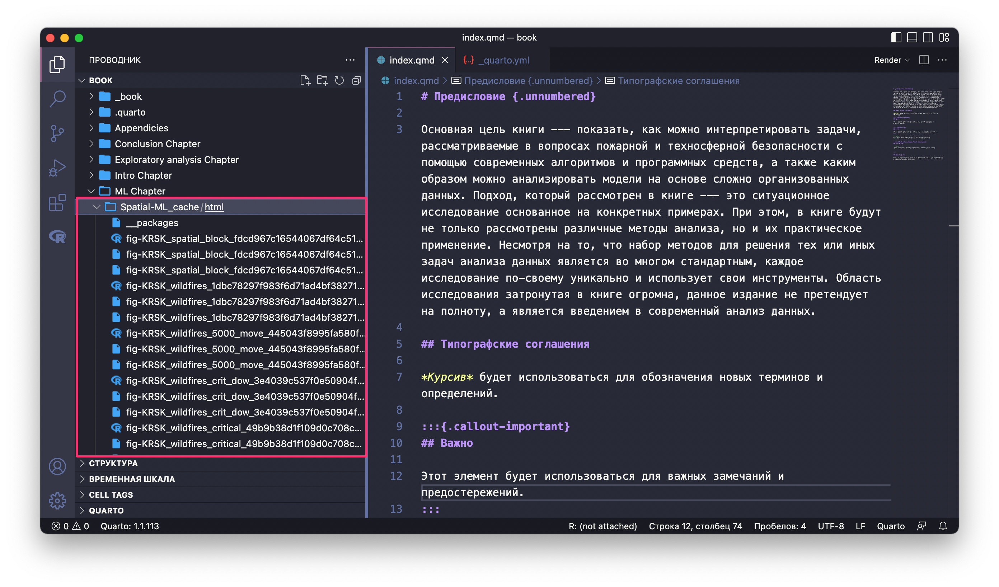
- Лучшая организация цитирования (как в визуальном редакторе в RStudio, так и организация ссылок через BibTEX, CiteDrive, Zotero и т.д.). Например, в статье How to Format Citations and Bibliographies in RStudio with CiteDrive and Quarto описано, как правильно создать отформатированное цитирование и библиографии. BibTeX использует метаданные для автоматической организации цитирования с помощью ключей, однако результат рендеринга не всегда работает корректно.
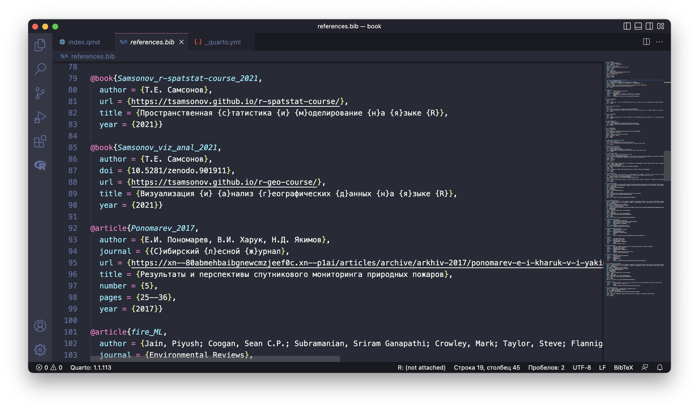
Расширенные макеты для размещения элементов документа на странице для регулировки ширины объекта, размещения объектов на полях, размещение рисунков рядом и т.д. Некоторые проблемы возникали при указании форматов ширины рисунков из воспроизводимых ячеек кода в блогах, возможно, это уже поправлено на сегодняшний момент. Для размещения, например, двух рисунков разных исходных размеров так, чтобы они имели одну высоту, необходимо гораздо больше действий, как если бы редактирование происходило в MS Word, описание такого случая в документации или примера нужно хорошо поискать.
Темы на основе Bootstrap 5 выглядят отлично. Простой и легкий стиль документов понравится большинству. Использование CSS и Sass для создания стилей документа можно отнести как к преимуществам (гибкой кастомизации), так и к недостаткам, поскольку, скажем, для изменения шрифтов в
reveal.js-презентации потребуется создать свой стилевой файл.
# пример указания Sass-стиля в YAML
---
theme:
light: theme.scss
---
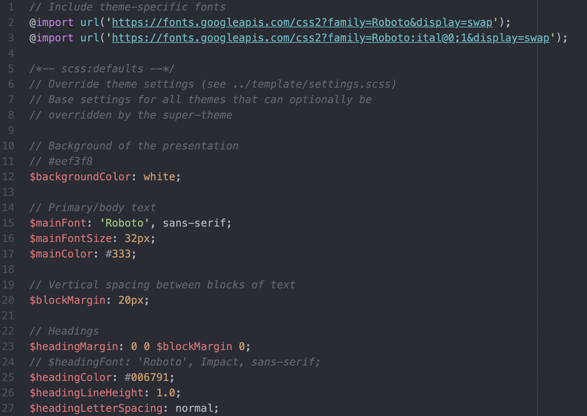
- Создание презентаций на основе reveal.js представляет новинку Quarto. Большим плюсом является наличие режима, аналогичного Режиму докладчика в MS Power Point с указанием времени с начала презентации, заметок и следующих слайдов. Также, презентации Quarto включает в себя встроенную версию Reveal Multiplex plugin. Плагин позволяет вашей аудитории следить за слайдами презентации, которой вы управляете, со своего телефона, планшета или ноутбука.
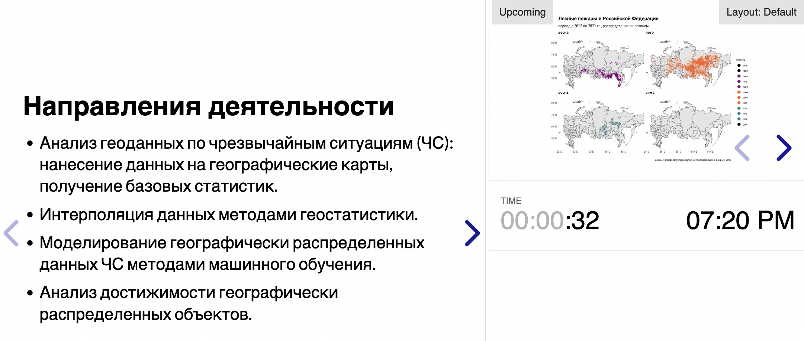
- Встраивание LearningApps.org-приложений, которое работает не только в Quarto, но и в R Markdown. Такого рода приложения, включенные как HTML-фреймы в учебные материалы или интерактивные книги, позволяют делать простые тесты для самопроверки усвоения учебного материала.
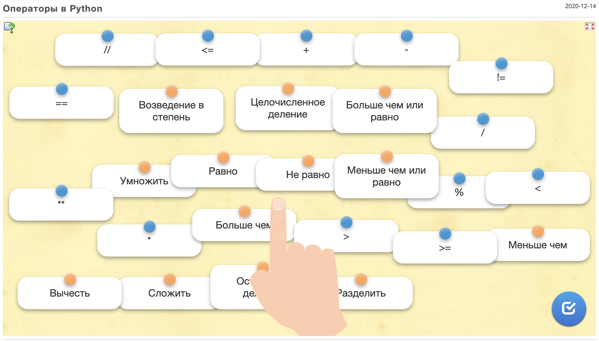
9 Заключение
В статье был дан обзор научно-издательской системы Quarto: базовые возможности Quarto, основы работы с Quarto, сравнение с R Markdown, возможности для публикации веб-документов. Кроме того, были рассмотрены некоторые эксклюзивные функции Quarto и недостатки. Даже очень поверхностное знакомство с Quarto получилось очень объемным.
Система не лишена недостатков. Например, поскольку Quarto написан с использованием фреймвока Deno, в одно время Quarto не компилировал документы у пользователей Apple Silicon-компьютеров. Возможные баги авторы стараются оперативно исправлять, идеи новых возможностей можно предлагать в разделе дискуссии.
Будем надеяться, что проект Quarto будет успешно развиваться, например, будут добавлены другие языки программирования кроме присутствующих, это могут быть любые другие языки поддерживающие Jupyter kernels (возможно Mojo), при этом хотелось бы, чтобы Quarto не превратится в неповоротливый медиакомбайн аналогичный тому, что представлял из себя когда-то iTunes.
Автор благодарит С.В. Бабёнышева и О.С. Малютина за полезные обсуждения по Quarto.
Session Info
Сноски
В настоящий момент в Quarto реализован вариант интерактивных дэшбордов.↩︎
Ссылка для цитирования
BibTeX
@online{матеров2022,
author = {Матеров, Е.Н.},
title = {Научно-издательская система Quarto},
date = {2022-11-13},
url = {https://www.naukaidannye.netlify.app/blog/posts/2022-11-13-quarto},
langid = {ru}
}
На публикацию можно сослаться как
Матеров Е.Н. Научно-издательская система Quarto
[Electronic resource]. 2022. URL: https://www.naukaidannye.netlify.app/blog/posts/2022-11-13-quarto.